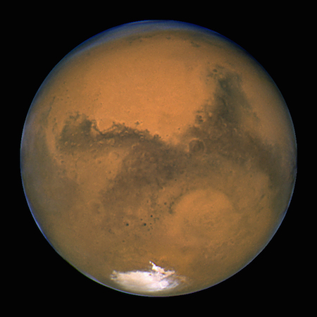

¿Qué son los planetas?
Los planetas son cuerpos celestes que orbitan alrededor de una estrella y que no emiten luz propia. Se clasifican en dos tipos: planetas interiores o rocosos (Mercurio, Venus, Tierra y Marte) y planetas exteriores o gaseosos (Júpiter, Saturno, Urano y Neptuno).
Características de los planetas
Cada planeta tiene características únicas, como su tamaño, composición atmosférica, temperatura y distancia a su estrella. Algunas curiosidades sobre los planetas de nustro sistema solar son:
- Mercurio es el planeta mas cercano al sol y el mas pequeño
- Venus llamado con frecuencia el planeta hermano de la Tierra, ya que ambos son similares en cuanto a tamaño, masa y composición
- La Tierra es nuestro hogar y es el único cuerpo astronómico donde se conoce la existencia de vida
- Marte es el planeta más parecido a la Tierra en cuanto a características geológicas. 
- Júpiter es el planeta más grande del sistema solar y tiene la Gran Mancha Roja, una tormenta gigante que dura siglos.
- Saturno tiene anillos muy característicos, formados por partículas de hielo y roca.
- Urano es un gigante helado principalmente compuesto por hidrógeno y helio, Posee la atmósfera planetaria más fría del sistema solar, con una temperatura mínima de -224 °C
- Neptuno es el planeta mas alejado al sol, y es aquí donde se producen los vientos más fuertes de cualquier planeta del sistema solar.